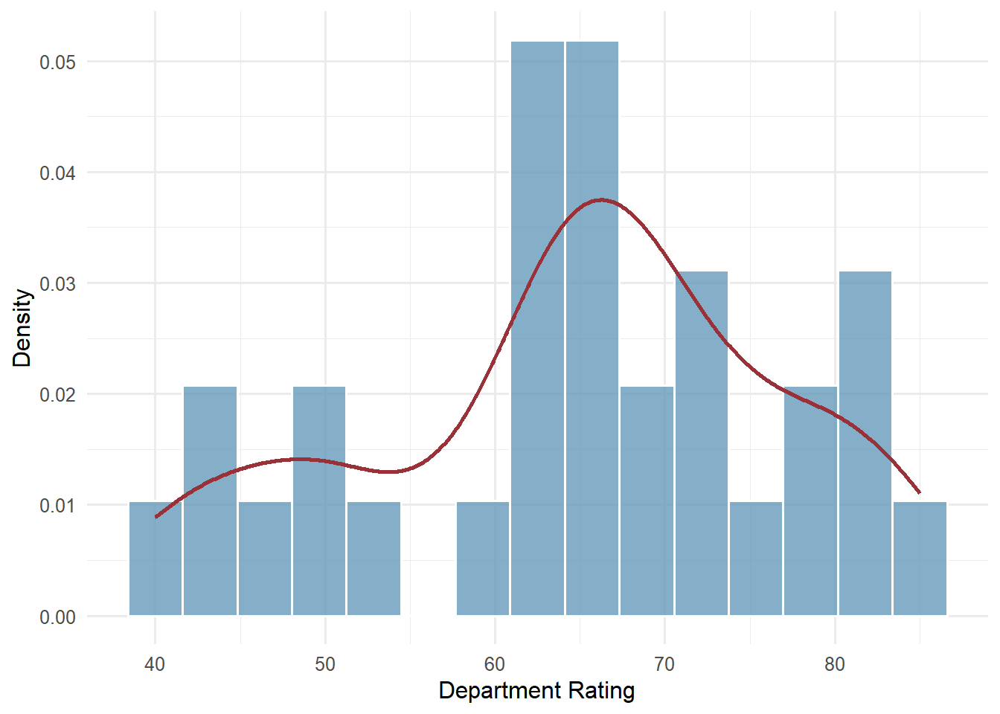
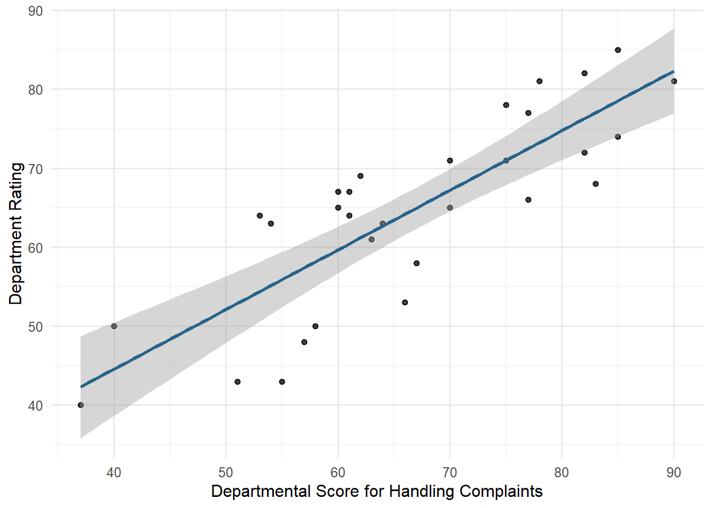
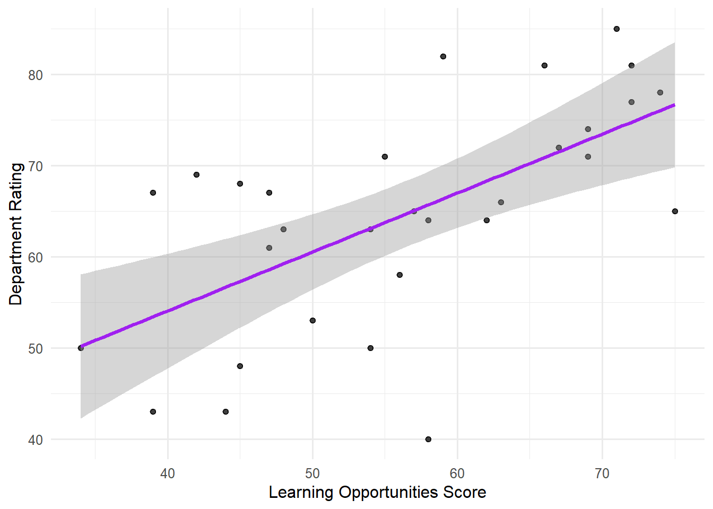
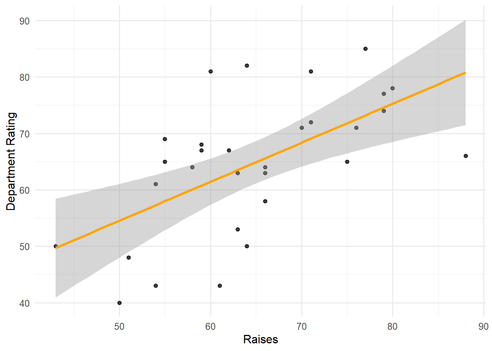
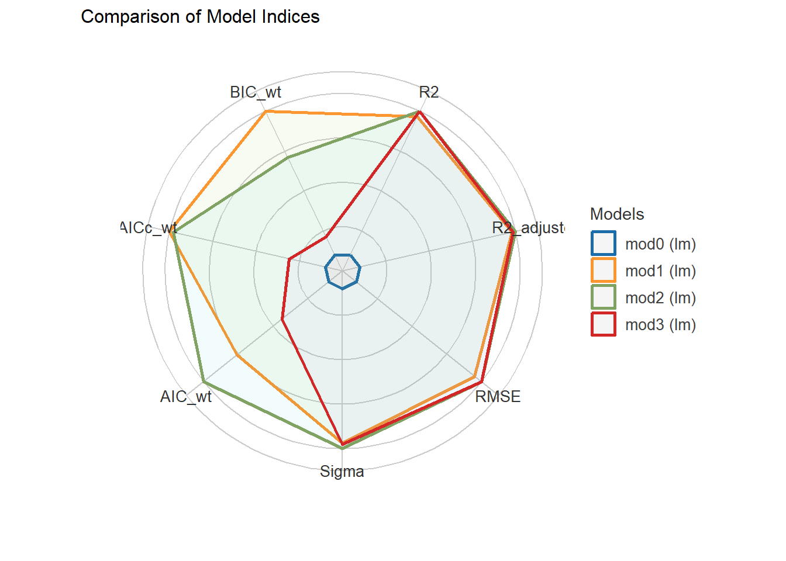
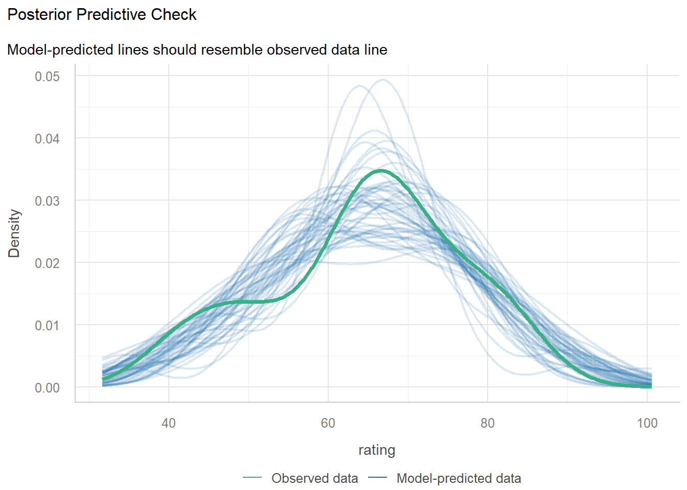
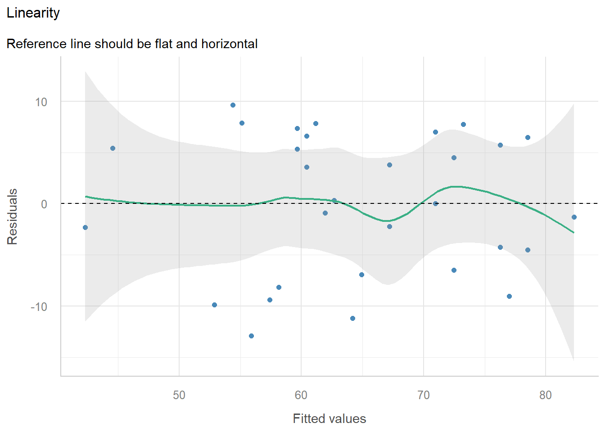
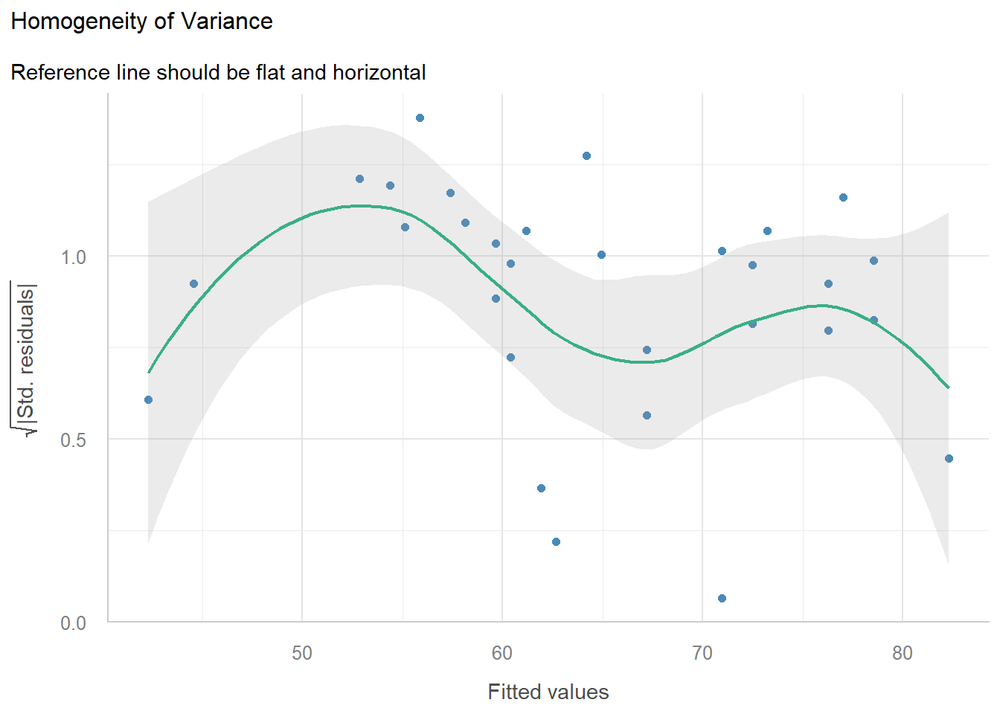
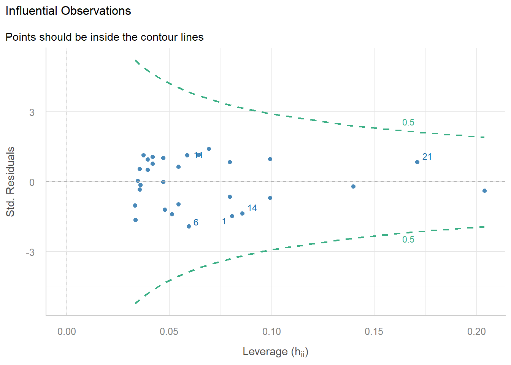
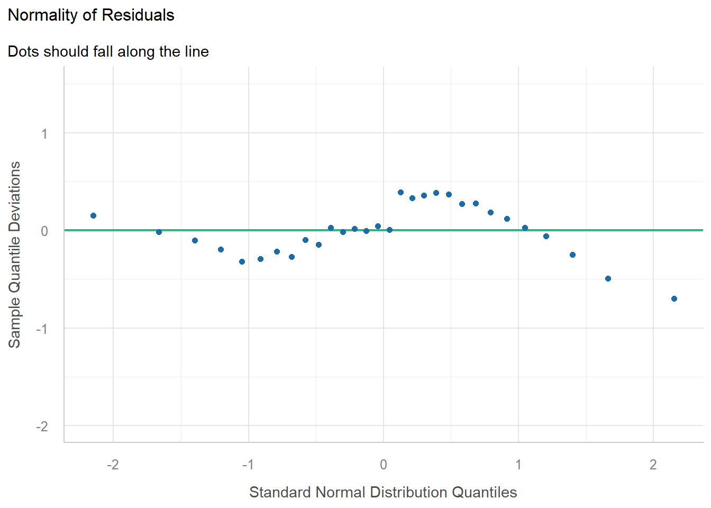

| variable | mean | sd | min | max |
|---|---|---|---|---|
| complaints | 66.60 | 13.31 | 37.00 | 90.00 |
| learning | 56.37 | 11.74 | 34.00 | 75.00 |
| raises | 64.63 | 10.40 | 43.00 | 88.00 |
Helka_Lab_3
Information about the Dataset
The dataset contains department-level summaries of employee responses regarding the overall workplace rating (rating), handling of employee complaints (complaints), opportunity to learn (learning) and pay increases (raises).
I use complete cases for all variables so that the candidate models are estimated using the same observations.
The final analysis includes 30 rating.
Research Question
How are complaints, learning opportunities, and raises associated with overall workplace rating on a departmental level?
Predictions
I expect:
- Departments who handle employee complaints better and have higher complaint scores will have higher ratings.
- Departments with more learning opportunities will have higher ratings.
- Departments with higher raises will have higher ratings.
These are predictions about associations, not causal effects.
1. Exploring the data
Descriptive statistics
Distribution of Ratings

Relationships between predictors and Rating



These exploratory plots provide support for the three predictions made above. There appears to be a linear relationship between all three predictors and overall department rating. It appears that the strongest relationship is between the handling of complaints and department score, as the error (shaded area on the graph) is the thinnest. Further, there are a few unusual (potentially outlier) observations, mostly in the scatterplot between learning opportunities and department ratings. More of the points on the scatterplot are further from the line of best fit for both higher and lower overall ratings.
2. Specify and estimate competing models
2.1 Explaining my Predictions
As a reminder, here were my predictions:
- Departments who handle employee complaints better and have higher complaint scores will have higher ratings.
- Departments with more learning opportunities will have higher ratings.
- Departments with higher raises will have higher ratings.
I made my first prediction because if employees feel their department is listening to them by acting on and handling any complaints that are brought up, they will have more positive feelings towards their department. These positive feelings will present themselves as a higher overall rating.
I made my second prediction because additional learning opportunities are often a way for someone to develop their skills and move further in an organization. Learning opportunities can also break-up the monotony of a job. These outcomes of learning opportunities can also result in more positive feelings towards the department and higher overall ratings.
Finally, I made my third prediction because when a department provides an employee with a pay raise, it is a clear indicator to that employee that their work and what they have done for the department is valued, not to mention with the cost of living, people value earning more money for the work they complete. Feelings of being valuable can also result in higher overall ratings.
2.2 Specifying Competing Nested Models
Inspecting the models
Call:
lm(formula = rating ~ 1, data = dat)
Residuals:
Min 1Q Median 3Q Max
-24.6333 -5.8833 0.8667 7.1167 20.3667
Coefficients:
Estimate Std. Error t value Pr(>|t|)
(Intercept) 64.633 2.222 29.08 <2e-16 ***
---
Signif. codes: 0 '***' 0.001 '**' 0.01 '*' 0.05 '.' 0.1 ' ' 1
Residual standard error: 12.17 on 29 degrees of freedom
Call:
lm(formula = rating ~ complaints, data = dat)
Residuals:
Min 1Q Median 3Q Max
-12.8799 -5.9905 0.1783 6.2978 9.6294
Coefficients:
Estimate Std. Error t value Pr(>|t|)
(Intercept) 14.37632 6.61999 2.172 0.0385 *
complaints 0.75461 0.09753 7.737 1.99e-08 ***
---
Signif. codes: 0 '***' 0.001 '**' 0.01 '*' 0.05 '.' 0.1 ' ' 1
Residual standard error: 6.993 on 28 degrees of freedom
Multiple R-squared: 0.6813, Adjusted R-squared: 0.6699
F-statistic: 59.86 on 1 and 28 DF, p-value: 1.988e-08
Call:
lm(formula = rating ~ complaints + learning, data = dat)
Residuals:
Min 1Q Median 3Q Max
-11.5568 -5.7331 0.6701 6.5341 10.3610
Coefficients:
Estimate Std. Error t value Pr(>|t|)
(Intercept) 9.8709 7.0612 1.398 0.174
complaints 0.6435 0.1185 5.432 9.57e-06 ***
learning 0.2112 0.1344 1.571 0.128
---
Signif. codes: 0 '***' 0.001 '**' 0.01 '*' 0.05 '.' 0.1 ' ' 1
Residual standard error: 6.817 on 27 degrees of freedom
Multiple R-squared: 0.708, Adjusted R-squared: 0.6864
F-statistic: 32.74 on 2 and 27 DF, p-value: 6.058e-08
Call:
lm(formula = rating ~ complaints + learning + raises, data = dat)
Residuals:
Min 1Q Median 3Q Max
-11.6282 -5.8107 0.5115 6.3946 10.3509
Coefficients:
Estimate Std. Error t value Pr(>|t|)
(Intercept) 10.52260 8.30481 1.267 0.216
complaints 0.65349 0.13637 4.792 5.82e-05 ***
learning 0.22069 0.14967 1.475 0.152
raises -0.02864 0.18245 -0.157 0.876
---
Signif. codes: 0 '***' 0.001 '**' 0.01 '*' 0.05 '.' 0.1 ' ' 1
Residual standard error: 6.943 on 26 degrees of freedom
Multiple R-squared: 0.7083, Adjusted R-squared: 0.6746
F-statistic: 21.04 on 3 and 26 DF, p-value: 3.957e-07 2.5 % 97.5 %
(Intercept) -6.54817583 27.5933815
complaints 0.37316545 0.9338110
learning -0.08695739 0.5283289
raises -0.40366218 0.3463882The complaints coefficient decreases between M1 and M2, which is most likely because learning opportunities was added into the model and explained part of the positive correlation. Between M2 and M3, the complaints coefficient increased by 0.01, showing that raises slightly decreased the outcome variable of ratings which is compensated by the small increase in complaints.
3. Compare Models’ Performance
3.1. Conduct nested-model comparisons
Analysis of Variance Table
Model 1: rating ~ 1
Model 2: rating ~ complaints
Model 3: rating ~ complaints + learning
Model 4: rating ~ complaints + learning + raises
Res.Df RSS Df Sum of Sq F Pr(>F)
1 29 4297.0
2 28 1369.4 1 2927.58 60.7256 2.884e-08 ***
3 27 1254.6 1 114.73 2.3799 0.1350
4 26 1253.5 1 1.19 0.0246 0.8765
---
Signif. codes: 0 '***' 0.001 '**' 0.01 '*' 0.05 '.' 0.1 ' ' 1These ANOvA results demonstrate that adding complaints into the model explains significantly more variation (F(1, 28) = 60.73, p < 0.001) than the intercept model. However, adding learning opportunities does not significantly improve model fit (F(1, 27) = 2.38, p = 0.135), nor does adding raises (F(1, 26) = 0.02, p = 0.877).
3.2. Extract model-level performance
# A tibble: 4 × 13
r.squared adj.r.squared sigma statistic p.value df logLik AIC BIC
<dbl> <dbl> <dbl> <dbl> <dbl> <dbl> <dbl> <dbl> <dbl>
1 0 0 12.2 NA NA NA -117. 238. 241.
2 0.681 0.670 6.99 59.9 0.0000000199 1 -99.9 206. 210.
3 0.708 0.686 6.82 32.7 0.0000000606 2 -98.6 205. 211.
4 0.708 0.675 6.94 21.0 0.000000396 3 -98.6 207. 214.
# ℹ 4 more variables: deviance <dbl>, df.residual <int>, nobs <int>,
# Model <chr># A tibble: 4 × 4
Model r.squared adj.r.squared RMSE
<chr> <dbl> <dbl> <dbl>
1 M0: Null 0 0 12.0
2 M1: Complaints 0.681 0.670 6.76
3 M2: + Learning 0.708 0.686 6.47
4 M3: + Raises 0.708 0.675 6.463.3. Combine nested tests and model performance
Model r.squared Delta.R2 adj.r.squared RMSE Residual.df
1 M0: Null 0.0000000 NA 0.0000000 11.967967 29
2 M1: Complaints 0.6813142 0.6813141641 0.6699325 6.756188 28
3 M2: + Learning 0.7080152 0.0267010317 0.6863867 6.466965 27
4 M3: + Raises 0.7082916 0.0002764121 0.6746329 6.463903 26
Nested.Df Nested.F.stat Nested.p.value
1 NA NA NA
2 1 60.72560389 2.883919e-08
3 1 2.37986580 1.349930e-01
4 1 0.02463664 8.764884e-013.4. Display the combined model-comparison table
| Model | R² | ΔR² | Adjusted R² | RMSE | Residual df | Nested df | Nested F | Nested p |
|---|---|---|---|---|---|---|---|---|
| M0: Null | 0.000 | — | 0.000 | 11.968 | 29 | — | — | — |
| M1: Complaints | 0.681 | 0.681 | 0.670 | 6.756 | 28 | 1 | 60.726 | < .001 |
| M2: + Learning | 0.708 | 0.027 | 0.686 | 6.467 | 27 | 1 | 2.380 | 0.135 |
| M3: + Raises | 0.708 | 0.000 | 0.675 | 6.464 | 26 | 1 | 0.025 | 0.876 |
3.5 Interpreting the combined table
The model that explains the largest proportion of variation in rating is M3. However, this is to be expected since explained variance will always increase as more predictors are added, and this is seen across all four models with each R² increasing from the previous model.
When we compare the adjusted R² values, we can see that our adjusted R² actually decreases from M2 to M3. This shows that the addition of raises to the model did not meaningfully improve the model since the adjusted R² also accounts for the number of predictors included in the model. The adjusted R² did improve slightly from 0.670 for M1 to 0.686 for M2. Therefore, the additional variation explained by M2 from M1 is not only due to the increased number of predictors, even if the increase in R² is small.
However, with that said, the only improvement in model fit was M1 with a p-value of less than 0.001. The other two models were not statistically significant, with p-values greater than 0.05. Additionally, we see a similar pattern emerge when looking at the RMSE values. M1 substantially reduced RMSE by approximately 43.5%, suggesting a meaningful improvement in the model’s prediction accuracy. On the other hand, M2 only reduced RMSE by 4.3% and M3 resulted in an almost negligible decrease of 0.05%.
Although adding the additional predictors did increase R² and the adjusted R² (with the exception of M3), while decreasing RMSE, the improvements continuously became smaller, suggesting that complaints provided the largest improvement in overall workplace ratings. This result is then supported with M1 having the only statistically significant change in model fit of the three nested models.
4. Evaluate Regression Diagnostics
The most promising model would be either M1 or M2, but I would choose M2. Although M1 is the only model that improved at a statistically significant level, M2 had the highest adjusted R², showing it had the best model fit when also accounting for complexity. Furthermore, M2 had the lowest RMSE, which decreased from M1 by 4.3% indicating the best prediction accuracy out of the four models.
In summary, the provisionally selected model is M2: + Learning.
Its performance is:
- R² = 0.708
- Adjusted R² = 0.686
- RMSE = 6.47 prestige points.
4.1 Examine the Assumptions
# Comparison of Model Performance Indices
Name | Model | R2 | R2 (adj.) | RMSE | Sigma | AIC weights | AICc weights
-------------------------------------------------------------------------------
mod2 | lm | 0.708 | 0.686 | 6.467 | 6.817 | 0.475 | 0.442
mod1 | lm | 0.681 | 0.670 | 6.756 | 6.993 | 0.348 | 0.453
mod3 | lm | 0.708 | 0.675 | 6.464 | 6.943 | 0.177 | 0.105
mod0 | lm | 0.000 | 0.000 | 11.968 | 12.173 | 3.36e-08 | 5.56e-08
Name | BIC weights | Performance-Score
--------------------------------------
mod2 | 0.376 | 95.03%
mod1 | 0.554 | 94.05%
mod3 | 0.070 | 67.00%
mod0 | 1.08e-07 | 0.00%
According to the performance comparison table, M2 is considered the best model.
Standard diagnostic plots

4.2 Reporting the Diagnostic Finding
Residuals versus fitted values
The residuals are generally scattered around zero and the line is relatively flat which is a good indicator of the model being linear. However, there is a slight curve around the fitted values between 65-70. It is not incredibly pronounced and so overall it appears this model satisfies the assumption of linearity with some minor deviations.
Normal Q–Q plot
Most of the points follow the diagonal reference line with some deviation at the tails. Therefore, the residuals appear approximately normally distributed as the deviations are not severe.
Scale–location plot
This plot is the largest reason for concern as the diagnostic line is not horizontal. This shows that the spread of the residuals appear to vary across the fitted values which suggests there could be potential heteroscedasticity.
Residuals versus leverage
Observation 24 has higher leverage than the other observations and could have be influencing the fitted model. This observation could be investigated further.
Additional diagnostics

Multicollinearity
There appears to be no multicollinearity as both predictors have low VIF and adjusted VIF values and a high enough tolerance.
Check Model Results
These plots further show what I stated above with the largest concern being that the assumption of homoscedasticity
Ploting M1 to compare
Additional diagnostics

$PP_CHECK
$NCV
$HOMOGENEITY
$OUTLIERS
$QQ
5. Reporting my Selected Model
5.1. Selecting a Model
Based on the comparisons, I would select M1 as the most defensible model. Although M2 has a higher R² and adjusted R², it only explains an additional 2.67% of variation and does not produce a statistically significant improvement in model fit (p = .135). Additionally, while M2 has a slightly lower RMSE than M1, the reduction is relatively small (approximately 4.3%). M3 provides even less improvement, with almost no additional variation explained and a slightly lower adjusted R² than M2. Furthermore, and the main reason M1 is more defensible, the diagnostic plots for M1 show a less pronounced issue with homoscedasticity compared to M2. Although, the assumption is not perfectly satisfied in either model, M1 has more consistent variance within the residuals. Overall, M1 provides a relatively strong and simpler explanation of workplace ratings without the additional complexity of predictors that do not significantly improve model fit.
5.2. Create a regression coefficient table
| Predictor | Estimate | SE | 95% CI lower | 95% CI upper | p |
|---|---|---|---|---|---|
| (Intercept) | 14.376 | 6.620 | 0.816 | 27.937 | 0.039 |
| complaints | 0.755 | 0.098 | 0.555 | 0.954 | < .001 |
5.3. Interpretting the Coefficients
The intercept coefficient indicates that when a department’s score for handling complaints is zero, its predicted overall workplace rating is 14.376. The coefficient for complaints is positive, indicating that higher scores for how a department handles complaints are associated with higher overall workplace ratings. Specifically, for every one-unit increase in a department’s complaints score, its predicted overall workplace rating increases by 0.755 points. Because this model includes only one explanatory variable, there are no other predictors being held constant.
The 95% confidence interval for the intercept ranges from 0.816 to 27.937. This interval is relatively wide, suggesting greater uncertainty around the estimated intercept. However, because the interval does not include zero, the intercept is statistically significant at the 0.05 level, reflected by the p_value of 0.039. In comparison, the 95% confidence interval for complaints ranges from 0.555 to 0.954. This narrower interval suggests less uncertainty around the estimated association. It also does not include zero, indicating a statistically significant positive association between complaints scores and overall workplace ratings as demonstrated by the p-value of *0**.
5.4 Report overall model performance
| Model | R² | Adjusted R² | RMSE |
|---|---|---|---|
| mod1 | 0.681 | 0.670 | 6.756 |
Overall model performance
The selected model, mod1, explains approximately 68.1% of the variation in overall workplace rating within this sample.
Its adjusted R² is 0.67, and its in-sample RMSE is 6.76 prestige points.
The RMSE describes the typical magnitude of the model’s fitted residuals on a root-mean-square scale.
It should not be interpreted as an estimate of out-of-sample predictive accuracy.
6. Findings and Limitations
This analysis illustrates how overall workplace rating can be investigated using several competing regression models.
The final model provides estimates of the conditional associations between how a department handles complaints and the overall department rating.The final model did not include learning opportunities or pay raises, which was not expected when I made my predictions.
However, several limitations should be recognized:
- The observations describe departments rather than individual people.
- Regression coefficients represent correlations rather than causal effects.
- Model diagnostics may reveal limitations not captured by summary fit statistics.
- In-sample model performance does not establish out-of-sample predictive accuracy.